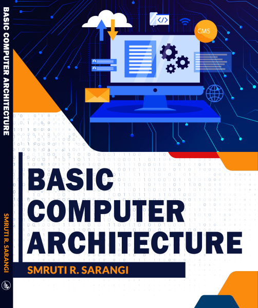

 
The book is
now freely available. This is version 2.0 released with a Creative Commons CC-BY-ND 4.0 license (Free to use and distribute, even commercially, but adaptations/derivatives are not possible. In all cases credit has to be given to the creator.). Version 1.0 was published by McGrawHill with a different title, "Computer Organisation and Architecture." That book has now been replaced by version 2.0; it has many improvements and bug fixes as compared to the previous version. You can
either download all the chapters
online (links below), or
download the entire book (pdf
version) for free, or buy a
version of it in print. For
the print version, you can buy
it on Amazon,
Flipkart,
or from the website of the
publisher WhiteFalcon.
If you like the book, please
fill the feedback
form. The book is
available internationally on
Amazon: USA,
UK,
Australia,
Italy,
Singapore,
UAE,
and Germany. Click to cite the book. Please contact me to write a translation for the book.
|
Join the Google
group for discussing
concepts, sharing doubts, and
for getting tips from other
computer architecture
enthusiasts. |
|
|
Second part of this
two-book series:
Next-Gen Computer Architecture |

|
Chapters ( CC-BY-ND 4.0 license)
1. Introduction
to Computer Architecture (pdf)
|
8. Computer
Arithmetic (pdf)
|
2. The
Language of Bits (pdf)
|
9. Processor
Design (pdf)
|
3. Assembly Language (pdf)
|
10. Principles
of Pipelining (pdf)
|
4. ARM
Assembly Language (pdf)
|
11. The
Memory System (pdf)
|
5. x86
Assembly Language (pdf)
|
12. Multiprocessor
Systems (pdf)
|
| 6. RISC-V (pdf) |
13. I/O
and Storage Devices (pdf)
|
7. Logic,
Gates, Registers, and Memories
(pdf)
|
Appendix:
Real-world
CPUs and GPUs (pdf)
|
PPT Slides ( CC-BY 4.0 license)
1. Introduction
to Computer Architecture (pptx)
|
8. Computer
Arithmetic (1,
2)
|
2. The
Language of Bits (pptx)
|
9. Processor
Design (pptx)
|
3. Assembly
Language (pptx)
|
10. Principles
of Pipelining (pptx)
|
| 4. ARM
Assembly Language (pptx)
|
11. The
Memory System (pptx)
|
| 5. x86
Assembly Language (pptx) |
12. Multiprocessor
Systems (pptx) |
6. RISC-V Assembly Language (pptx)
|
13. I/O
and Storage Devices (pptx)
|
7. Logic
Gates, Registers, and Memories (pptx)
|
|
Videos
(All the videos are
at least 720p HD quality. The
resolution observed on YouTube
depends on network
connectivity. Note that the recording was done for a previous version of the book that did not have the RISC-V chapter. Hence, the chapter numbers may not match.)
Introduction
to the book, YouTube
Chapter 1:
Introduction, YouTube
Chapter 2: Language of Bits
Part
I, Boolean algebra, binary
representation, YouTube
Part
II, Negative integers, YouTube
Part
III, Floating point numbers,
strings, YouTube
Chapter 3: Fundamentals of
Assembly Languages
Part
I: Fundamentals of assembly
languages, YouTube
Part II: SimpleRisc assembly
language, YouTube
Part III: Stacks,
functions, and instruction
encoding, YouTube
Chapter 4: ARM Assembly
Part I: Basics of the ARM
assembly language, YouTube
Part II: Branch
instructions, memory
instructions, and
instruction encoding, YouTube
Chapter 5: x86 Assembly
Part I: Basics of x86
assembly, YouTube
Part II:
ALU, branch, and function
call instructions, YouTube
Part III: String
instructions, floating
point instructions, YouTube
Part IV: Instruction
encoding, YouTube
Chapter 6: RISC-V Assembly
Part I: ISA details and integer instructions, YouTube
Part II:
Branch and memory instructions,
YouTube
Part III: Floating point instructions and instruction encoding, YouTube
Chapter 7: Digital Logic
Part I:
Transistors and gates, YouTube
Part
II: Latches and
flip-flops, YouTube
Part
III: Memory cells, YouTube
Chapter
8: Computer Arithmetic
Part I:
Integer Adders, YouTube
Part
II: Integer multipliers, YouTube
Part III: Wallace tree
multiplier, YouTube
Part
IV: Integer division, YouTube
Part V:
Floating-point addition
and subtraction, YouTube
Part
VI: Floating-point
multiplication and
division, YouTube
Chapter 9: Processor
Design
Part I:
Processors with hardwired
control units, YouTube
Part II: Processor with
micro-programming - I, YouTube
Part
III: Processor with
micro-programming - II, YouTube
Chapter 10: Principles of
Pipelining
Part I:
Basic concepts, and the
notion of hazards, YouTube
Part
II: Interlocks and
forwarding, YouTube
Part
III: Forwarding and
performance analysis, YouTube
Part IV:
Interrupts and exceptions, YouTube
Chapter
11: Memory System
Part I: Overview of the
memory system, YouTube
Part II: Design of caches,
YouTube
Part III: Details of the
memory system (formulae,
cache misses, prefetching)
YouTube
Part IV: Virtual memory, YouTube
Chapter 12: Multiprocessor
Systems
Part I: Overview of
parallel programming, YouTube
Part II: Coherence and
consistency, YouTube
Part III: Cache
coherence protocols, YouTube
Part IV:
Multithreading and vector processing,
YouTube
Part V:
Graphics processors and interconnects,
YouTube
Chapter
13: I/O and Storage
Devices
Part I: Overview, and the
physical layer (encoding,
synchronization), YouTube
Part II: Data
Link, network, and
protocol layers YouTube
Part III: PCI-X, USB, and
hard disks,
YouTube
Part IV: Optical and solid
state drives, YouTube
(If
any non-profit organization (of
any country) wants a copy of
these videos (original .mp4
format), the author will be
happy to provide them, as long
as their contents are not
modified and they are available
free of charge.)
Solutions Manual
The solutions manual
currently contains all the
exercises, and solutions for
most of them (roughly 90%). It
is not fully complete at this
stage. Readers are requested
to check this page frequently
to get updated versions of the
solution manual. The current
version can be found here.
Note that you require a
password to open this
document. A large number
of these solutions have been
prepared by students; as a
result there might be errors
in this document. Please
contact the author if you find
any errors or need any
clarifications. Note that
the solution manual is for
instructors only.
Supplementary Software
GUI
Based SimpleRisc Emulator -- A GUI
based SimpleRisc emulator. It can be
used to write, run, and debug SimpleRisc
programs. (Java source code) Written by
Tushar Marda and Nikhil Kumar
Command
Line SimpleRisc Emulator -- A
command line based SimpleRisc emulator.
It can be used to write, run, and debug
SimpleRisc programs. (C source code and
documentation) Written by Ritesh N.
SimpleRisc
Processor in Logisim (Design 1) --
Design of the SimpleRisc processor in
Logisim, along with documentation and
examples. Written by Ritesh N. and
Shubhankar Suman Singh
SimpleRisc
Processor in Logisim (Design 2) --
Design of the SimpleRisc processor in
Logisim, along with examples. Written by
Tushar Marda and Nikhil Kumar
VHDL
Model of the SimpleRisc Processor
-- VHDL model of the single stage
SimpleRisc processor along with examples
and documentation. Written by Kunal
Singhal and Swapnil Palash
EmuArm (GUI
based ARM Emulator) -- GUI based
ARM emulator for writing, running, and
debugging programs written in ARM
assembly. Written by Namita Atri and
Geetika Malhotra
NASM
assembler -- Netwide Assembler:
Can be used to compile, and debug
programs written in x86 assembly.
RISC-V
emulator -- A simple 32-bit command line
RISC-V emulator (version 3.0).
Tejas
Architecture Simulator --
Can be used to simulate the behaviour of
simple and complex multicore processors
including their pipelines, memory
hierarchies, and NOCs. The simulator can
also run in parallel, simulate GPUs, and
simulate energy consumption. Written by
the SRISHTI
group
Cite the book
@book{basiccomparch,
author = {Smruti R. Sarangi},
title = {Basic Computer Architecture},
date = {1st September 2021},
edition = {1st edition},
publisher={White Falcon Publishing},
isbn={1636403034}
}
|